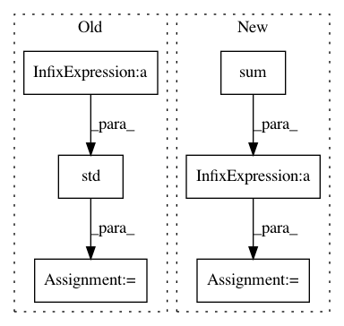

61e9af1a3757a8b75e86777bdfa341ef112a31d1,pymc3/step_methods/smc.py,SMC,calc_beta,#SMC#,280
Before Change
while up_beta - low_beta > 1e-6:
current_beta = (low_beta + up_beta) / 2.
weights_un = np.exp((current_beta - self.beta) *
(self.likelihoods - self.likelihoods.max()))
sj = np.mean(weights_un)
cov_temp = np.std(weights_un) / sj
if cov_temp > self.coef_variation:
up_beta = current_beta
else:
low_beta = current_beta
After Change
weights_un = np.exp((new_beta - old_beta) * (self.likelihoods - self.likelihoods.max()))
weights = weights_un / np.sum(weights_un)
ESS = int(1 / np.sum(weights ** 2))
//ESS = int(1 / np.max(weights))
if ESS == rN:
break
elif ESS < rN:
In pattern: SUPERPATTERN
Frequency: 3
Non-data size: 6
Instances
Project Name: pymc-devs/pymc3
Commit Name: 61e9af1a3757a8b75e86777bdfa341ef112a31d1
Time: 2018-01-26
Author: aloctavodia@gmail.com
File Name: pymc3/step_methods/smc.py
Class Name: SMC
Method Name: calc_beta
Project Name: datascienceinc/Skater
Commit Name: 0bab786d05391d24fd101f3aed71e6f4b3f14b55
Time: 2017-05-08
Author: aikramer2@gmail.com
File Name: lynxes/core/global_interpretation/feature_importance.py
Class Name: FeatureImportance
Method Name: feature_importance
Project Name: nilmtk/nilmtk
Commit Name: 9ce99b87ced85d30b755c4bf8e94b1d592b963bd
Time: 2014-07-10
Author: jack-list@xlk.org.uk
File Name: nilmtk/metrics.py
Class Name:
Method Name: rms_error_power